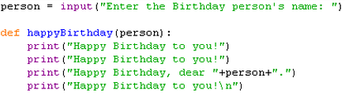
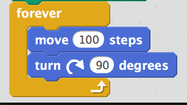

Variable: an element, feature, or factor that is liable to vary or change.
On python a variable may look like:
On scratch a variable may look like:
A real life example of a variable is the weather. The weather changes and based on the weather your clothes too.
Function: a body of code that returns a value.
On python a function may look like:
On scratch a function may look like:
A real life example of a function is in math, when you enter a variable into the equation to get a result.
Loop: a control flow statement that allows code to be executed repeatedly based on a given Boolean condition.
On python a loop may look like:

On scratch a variable may look like:
A real life example of a loop is waking up at 7am everyday.It is in a forever loop.
Conditionals: features of a programming language, which perform different computations or actions depending on whether a programmer-specified boolean condition evaluates to true or false.
On python a conditional may look like:

On scratch a variable may look like:
A real life example of a conditional is if it is raining then you use an umbrella.